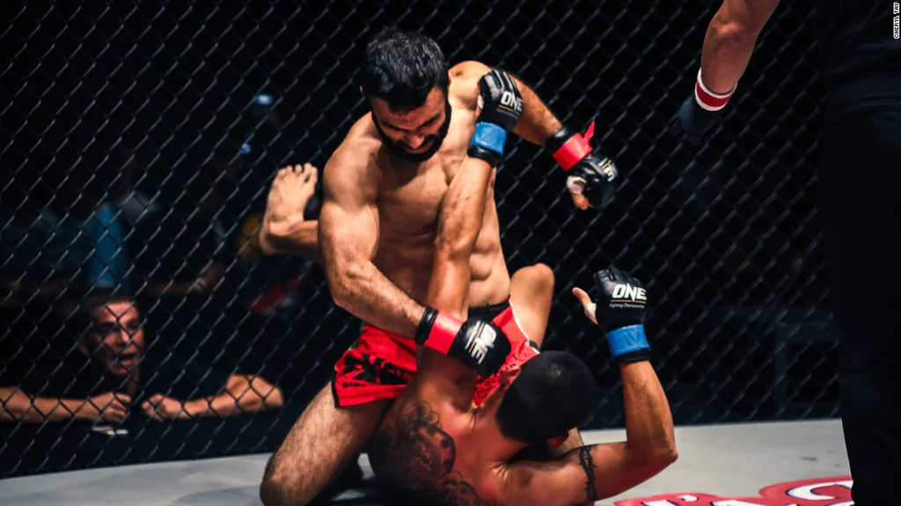

ARTES MARCIALES MIXTAS
Las artes marciales mixtas (conocida frecuentemente por sus siglas en inglés MMA, de mixed martial arts) son la combinación de técnicas provenientes de distintas artes marciales y deportes de combate, generalmente se usa para la competición en el deporte de combate pero también para la defensa personal.
El deporte de combate actual que permite el uso de artes marciales mixtas es el de mayor contacto que existe, ya que permite tanto el uso de técnicas para pelear de pie o golpes (striking): puños, patadas, rodillazos, codazos, etc. como técnicas para pelear en el suelo o agarres (grappling): derribes, lanzamientos, llaves articulares, estrangulaciones, etc. y la combinación de ambas: agarres con golpes (ground and pound) que provienen de una gran variedad de artes marciales y deportes de combate como el kárate, kickboxing, boxeo, savate, muay thai, taekwondo, judo, hapkido, lucha libre, lucha grecorromana, jiu jitsu brasileño, wushu, San Da, sambo, entre otras. Es el deporte de combate de más rápido crecimiento en la última década1.
Existe una gran variedad, comúnmente y entre otras, podemos señalar: karate, kickboxing, boxeo, muay thai, judo, lucha libre, lucha grecorromana, jiu jitsu, jiu jitsu brasileño, wushu, san da, sambo, taekwondo y muchas otras más.
A continuacion, una lista con las disciplinas mas utilizadas por los competidores:
Kick boxing:
es un deporte de combate en el cual se utilizan los puños y los pies. Es una mezcla de técnicas del boxeo y el karate, incluyendo las patadas bajas a los muslos del muay thai.Jiu-jitsu brasileño:
Se caracteriza mayormente por sus técnicas de lucha en el suelo. Se caracteriza por las técnicas de rendición, luxación, estrangulaciones, además de inmovilizaciones.Jiu-Jitsu Tradicional:
se destaca por la gran variedad en las luxaciones articulares, lanzamientos, estrangulaciones y sumisiones.Judo:
sistema basado fundamentalmente en estrangulaciones, luxaciones, inmovilizaciones y lanzamientos.Boxeo:
es practicado por artistas marciales mixtos por ser ideal para el trabajo de puños, y el manejo de la media distancia considerándose el mejor en este sentido.Karate:
sus técnicas de combinación de golpes y patadas tienen una gran efectividad en el combate de pie.Lucha (Libre y Grecoromana):
para el trabajo de pelea cuerpo a cuerpo, contempla numerosos derribos y lanzamientos. Deporte en el que dos contrincantes, siguiendo ciertas normas, pelean cuerpo a cuerpo con el objetivo de derribar e inmovilizar al adversario de manera que toque con la espalda en el suelo durante unos segundosA continuación, una lista con las franquicias mas conocidas donde se desarrolla la competencia de las MMA:
Un enfrentamiento de MMA dura un total de 3 rounds de 3 minutos cada uno. Además, se otorga una pausa de 1 minuto entre cada round. Los luchadores son asignados a una esquina en el ring en la cual deben descansar durante las pausas.
En la esquina del luchador se debe encontrar su equipo, que generalmente consiste en el entrenador, médico de cabecera y cualquier otro miembro de apoyo. Los enfrentamientos son supervisados por un réferi y calificados por jueces.
Los jueces usan un sistema de 10 puntos obligatorios para calificar a los luchadores durante el round. Ellos usan tres criterios para asignar los puntos y decidir un ganador, que son ataques efectivos, agresividad efectiva y dominio de la jaula.
Un luchador no puede simplemente perseguir a otro por la jaula gruñendo, debe haber algún impacto o causa que impida que el oponente siga luchando. En las reglas de MMA, incluso la intimidación debe tener una razón de ser.
Un round de 10-9 da la ventaja al luchador por una diferencia mínima. Generalmente quiere decir que uno de ellos lanzó los mejores ataques incluso solamente por el uso de una técnica diferente.
Al final de los tres rounds, el luchador que haya tenido mejores resultados será el ganador. También se puede ganar un enfrentamiento por sumisión, que es cuando el oponente hace tap-out físico o verbal.
Conor Mcgregor
Nuestra portada de mayo no está para coñas. Nacido en 1988, este irlandés de la vieja escuela es el actual campeón de la UFC en la rama de peso ligero, pero en nuestra entreviata confiesa que no descarta partirse la cara con Mayweather: "Él es el tío contra el que todos quieren pelear, es el que tiene más sentido. Pero no me importaría darle una hostia a alguno de los que él tumbó". Así es McGregor: no se cierra en banda con ninguna opción, siempre está abierto a explorar otras posibilidades con sus puños.
more infoAnderson Silva
En pocas palabras, el más grande que ha habido y, probablemente, habrá. Silva es una leyenda viva capaz de mantenerse invicto durante 2.457 días, estableciendo así un récord histórico para la UFC. No es el único, pues a eso hay que sumarle el de mayor número de victorias consecutivas, defensas de un título y knockdowns. Estamos hablando de un tipo capaz de ganar un combate incluso con una costilla rota. Casi todos sus compañeros coinciden a la hora de refererise a él como El Campeón.
more infoRonda Rousey.
Ella es la razón por la que las artes marciales mixtas se han convertido en un fenómeno pop durante los últimos años. McGregor, Bisping y Silva será estrellas para los muchos aficionados, pero Rousey es el nombre que conocen incluso los que nunca consiguen acordarse de esas tres siglas.
more infoGeorges St-Pierre.
El canadiense tranquilo. Se trata de uno de los luchadores más disciplinados que jamás han pisado el octógono de la UFC, amén del mejor peso wélter de toda la historia de las MMA. Nuestro hombre también forma parte del Universo Marvel: en 2014 se pegó con el mismísimo Capitán América en 'El Soldado de Invierno', donde interpretaba al malvado Georges Batroc (también conocido como El Saltador).
more info